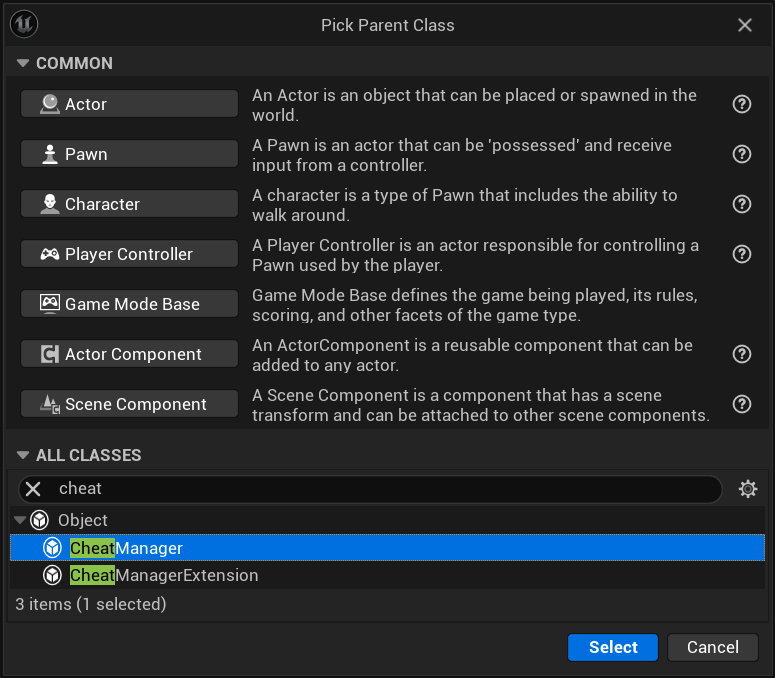
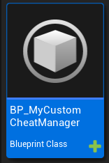
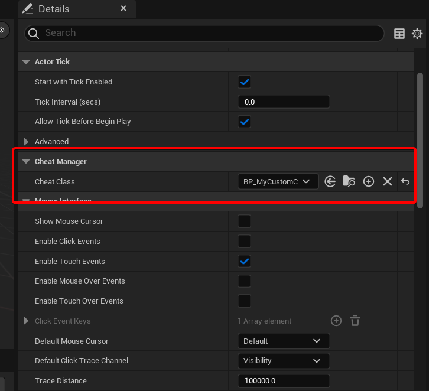
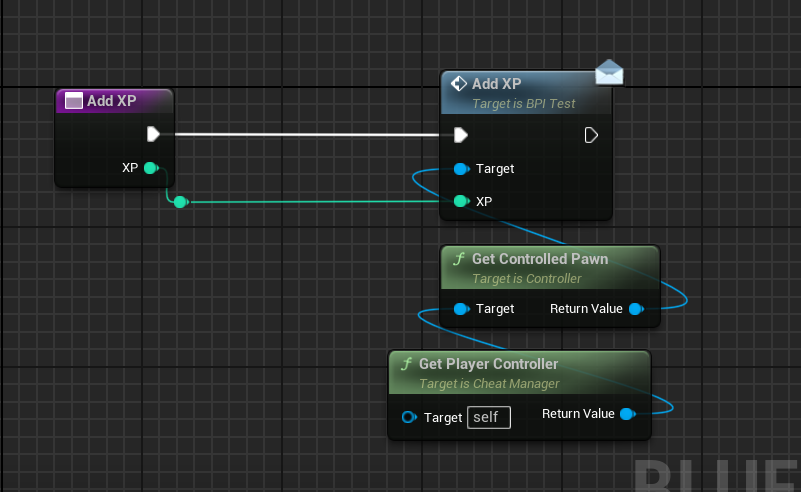
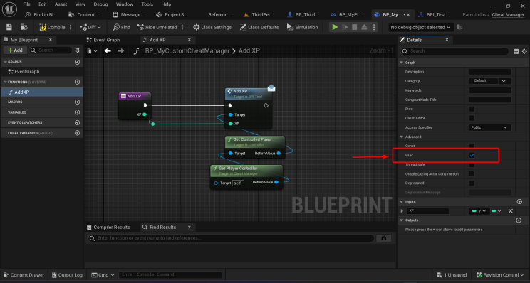
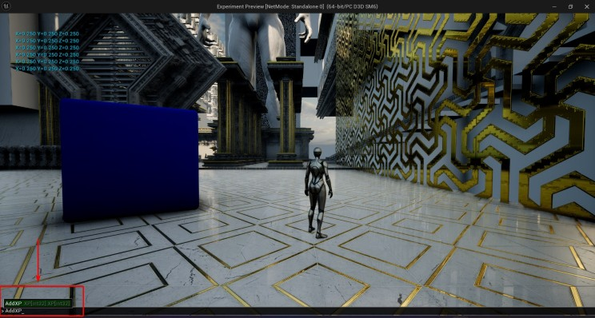
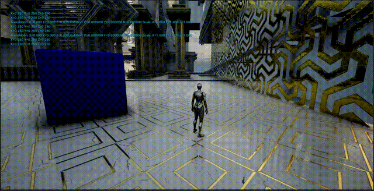

Probar un sistema de gameplay suele exigir repetir los mismos pasos: ganar experiencia, llegar a un punto de control, desbloquear una habilidad, obtener un objeto o reproducir un estado concreto. Esa repetición ralentiza la iteración. El Cheat Manager de Unreal Engine ofrece un lugar para comandos de desarrollo que se ejecutan desde la consola.
Epic describe UCheatManager como un punto central para acciones de prueba y depuración e indica que no se instancia en las compilaciones Shipping.
El problema al probar
Imagina que necesitas comprobar si un personaje sube de nivel al recibir XP. Repetir combates o misiones prueba también el resto del juego, pero dificulta trabajar directamente en la progresión. Un comando como AddXP 500 permite alcanzar el estado que necesitas.
Configuración en Blueprints







- Crea un Blueprint derivado de CheatManager.
- Asígnalo como Cheat Manager Class en tu Player Controller.
- Crea una función como
AddXPcon un parámetro entero. - Activa la opción Exec de la función.
- Envía la petición al sistema de progresión que ya usa el juego en vez de duplicar sus reglas.
Uso del comando
Ejecuta el juego en PIE, abre la consola con la tecla de tilde e introduce:
AddXP 500
El comando debe llamar a la misma API de progresión que usa el gameplay normal. Así, el atajo de depuración sigue siendo pequeño y no se convierte en una segunda implementación de las reglas.
Consideraciones de producción
- Autoridad: los comandos que modifican un estado replicado deben seguir la ruta con autoridad del servidor.
- Facilidad de uso: establece nombres coherentes y documenta los parámetros para el equipo.
- Separación: evita alojar herramientas reutilizables en Blueprints de personaje sin relación con ellas.
- Seguridad: Cheat Manager no sustituye los permisos en entornos de prueba que no sean Shipping.
Cheat Manager funciona mejor dentro de una estrategia de depuración más amplia: comandos para acciones, overlays para observar el estado en vivo y registros o capturas para conservar evidencia.